2026年度 後期 · 火曜1限 講義スライド解説 / 第1回
熱力学
第1回｜相図・相律とエネルギー保存則
資料判定：第1回への対応は推定（指定された「熱力学 第1回.txt」とPDFの話題・順序・終点が一致）。資料順は不明。出典：20261006 - 熱力学資料.pdf（全22ページ）。1ページ1枚、印字スライド番号がないためPDFページ番号で対応。口頭説明の具体例も反映し、原典を優先して誤認識を補正。
想定読了時間：約22〜26分。日本語毎分400〜600字を目安に数式・図の照合時間を加算。原PDFの熟読や計算の自力再現は含めない。過去問・演習未確認のため詳しさは内容上の必要性で暫定判断。
講義を通して言いたいこと
物質の相は温度と圧力で決まり、複数の相が共存するには平衡条件を満たす必要がある。一方、状態を変えるときのエネルギーは熱と仕事の両方で出入りするので、定容・定圧という実験条件に合わせて内部エネルギーやエンタルピーを使い分ける。この二つを結ぶ入口が、相図・相律と熱力学第1法則である。
授業の見通しと1.1：なぜ熱力学を使うか
この章の想定読了時間：約4分
熱力学でいう系は、いま注目している物質や容器の中身で、それ以外を外界と呼ぶ。定容は系の体積が一定、定圧は圧力が一定という条件である。ここで登場する\(U\)は系の内部エネルギー、\(T\)は絶対温度（単位K）、\(S\)はエントロピー、\(H\)はエンタルピーというエネルギー量である。エントロピーは状態を特徴づける量で、熱のやり取りや変化の向きの議論に使う。厳密な定義は今回の範囲外。エンタルピーの定義はp.20で説明する。
ヘルムホルツの自由エネルギー \(F\) とは
内部エネルギー \(U\) から \(TS\) を引いた量。温度と体積を一定に保つ系の変化を考えるときに使う。たとえば、温度を一定にした密閉・固定容積の容器内で反応前後を比べるための「ものさし」と考える。
ギブズエネルギー \(G\) とは
エンタルピー \(H=U+pV\) から \(TS\) を引いた量。温度と圧力を一定に保つ系の変化を考えるときに使う。たとえば、大気圧のもとで容器の中身が膨張できる反応では、膨張による外への仕事も織り込んで前後を比べる「ものさし」になる。
ここで「どちらへ自然に進むか」とは、反応や状態変化が、外から無理に進めなくても起こり得る向きを比べること。物質が出入りしない系で、電気的な仕事などを外から加えず、膨張・圧縮以外の仕事を取り出さない場合、温度と体積を保つなら反応前後の \(F\)、温度と圧力を保つなら \(G\) を比べる。変化後の値が小さい向きが自然に進み得る向きで、少し変化させてもそれ以上小さくならない状態が平衡である。これは変化の向きの条件であり、進む速さまでは分からない。内部エネルギー \(U\) がいつも減るという意味でもない。
文字起こし冒頭の内容（誤認識・言いよどみを整えた要旨）：自由エネルギーを説明した後、「反応が進むかを考えるときは、エネルギーが高い側から低い側へ向かうかを見る」と述べている。原典：熱力学 第1回.txt・冒頭。上の条件別の \(F\)・\(G\) の説明は、この発言を正確に読むための補足。
PDFの「理想的，定容／実在の系，定圧」は授業での使い分けの案内であり、\(F\)が理想気体専用という意味ではない。文字起こしを整えると「体積の決まった密閉容器やボンブの中では体積が変わらず、通常の大気圧下の反応では圧力一定として扱う」という説明になる（原典：冒頭）。教科書はPDFに明示された阿竹徹著『熱力学』（丸善）。
解説 2
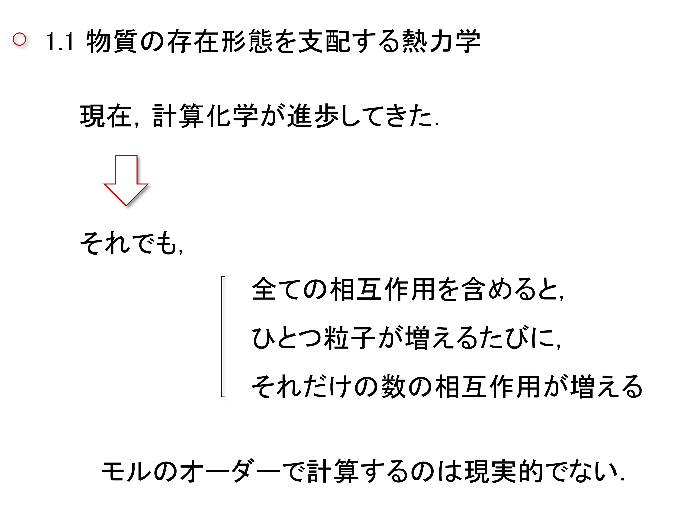
モルは物質量の単位で、1 molには約\(6.0\times10^{23}\)個の粒子がある。仮に全粒子対の相互作用を数えると、粒子数\(N\)に対して\(\frac{N(N-1)}{2}\)組になり、1粒子追加するだけで\(N\)組増える。粒子間の相互作用とは、互いに及ぼす力やそれに対応するエネルギーのことである。
熱力学は、この膨大な運動を一つずつ解かず、温度・圧力などの全体量から可能な状態を議論する。優先度低・概要でよい：計算化学の計算量評価が目的ではなく、次のページの「記述する尺度の違い」を理解するための導入だからである。
解説 3
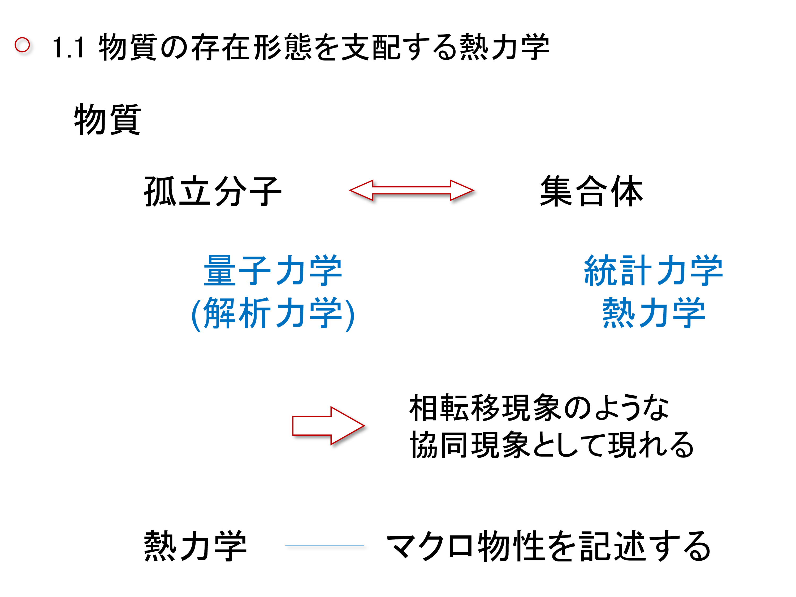
図の左は孤立分子、右は多数の分子の集合体。量子力学は微視的な状態を、解析力学は古典的な運動を扱う。統計力学は多数の微視的状態と全体の性質を結び、熱力学は温度・圧力・体積などのマクロ物性、つまり物質全体として測れる性質を記述する。
相とは、物質の状態や性質が一様な部分で、固相・液相・気相などをいう。相転移は相が変わる現象。文字起こしを整えると「水が氷になる現象は、分子1個ではなく集合体の変化として考える」という例になる（原典：相転移の説明）。図の両向き矢印は記述同士の関係を示し、孤立分子が自動的に集合体へ変化するという意味ではない。
1.2：相図・臨界点とボンベの中身
この章の想定読了時間：約4〜5分
解説 4
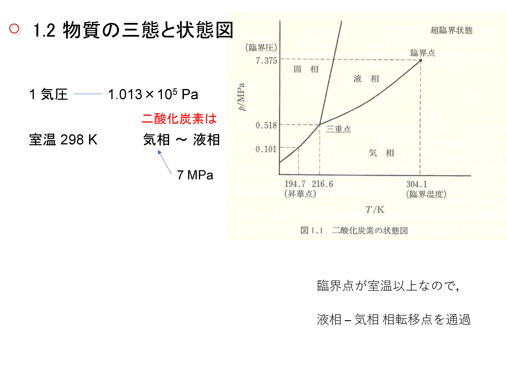
相図（状態図）は、条件に応じて安定な相を示す図。横軸は\(T\)（K）、縦軸は圧力\(p\)（MPa）。\(1\,\mathrm{MPa}=10^6\,\mathrm{Pa}\)なので、1気圧は図上では約\(0.101\,\mathrm{MPa}\)である。一定圧力で加熱するなら右へ、一定温度で圧縮するなら上へ進む。境界線上では隣接する二つの相が平衡で共存する。
図の三重点は固体・液体・気体が共存する点で、CO₂では\(216.6\,\mathrm{K}\)、\(0.518\,\mathrm{MPa}\)と表示されている。1気圧はその圧力より低いので、加熱したドライアイスは液体を経ずに気体になる。これを昇華という。対して授業で採る室温\(298\,\mathrm{K}\)では、加圧により気液境界を横切って液化できる。
臨界点は液体と気体の共存線が終わる点。図のCO₂の臨界温度\(304.1\,\mathrm{K}\)は室温より高い。原典の「7 MPa」は授業の概略値として扱い、298 Kでの厳密な境界圧力と断定しない。文字起こしでは「barと気圧は単位として異なる」と説明している（原典：CO₂の相図の説明）。この比較は、\(1\,\mathrm{bar}=10^5\,\mathrm{Pa}\)で1気圧とは少し異なる、という単位の補足に限って採用する。
追加されたボンベ図は、上が気体、青い下部が液体。気体を取り出すと液体の一部が気化し、液面は下がるが気液共存が保たれる。温度が同じで十分に平衡へ戻れば、圧力はその温度での共存圧力に戻る。そのため「半分使ったら圧力も半分」という推測はできない。
図の「最後」も液体が残っており、使い切った状態ではない。液体がなくなった後はこの説明が変わる。文字起こしを整えると「液体が残るボンベを横にすると、出口側に液体が来ることがある」という例になる（原典：ボンベの説明）。図は相の配置と残量・圧力の関係を理解するための模式図である。
解説 6
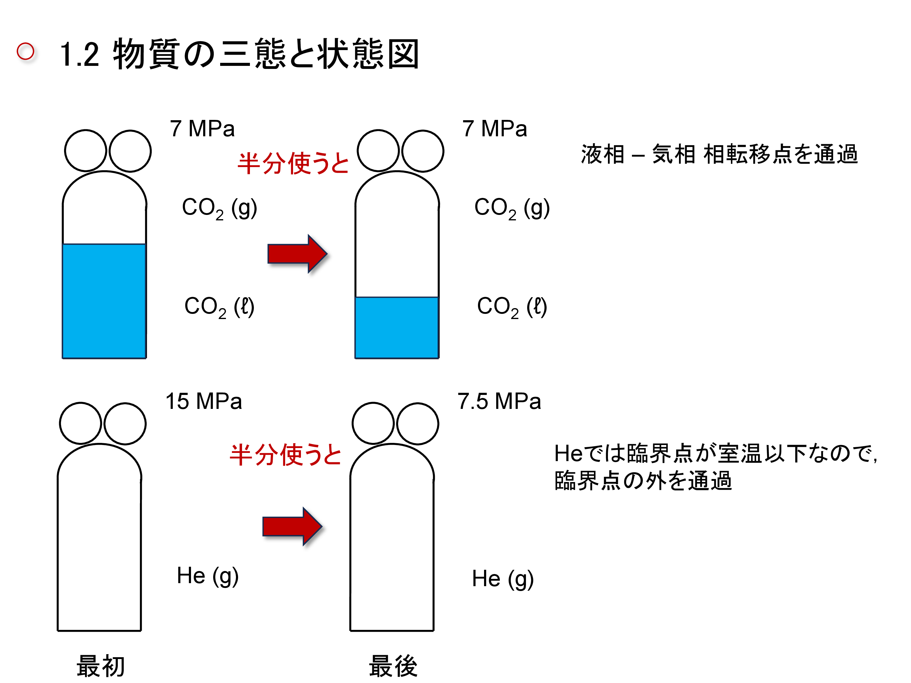
上段はp.5の復習、下段にHeの比較が加わる。Heの臨界温度は室温より低いため、室温のまま加圧しても液体と気体の境界線を横切らない。高密度へ連続的に変わり得るが、CO₂のように液体の気化が圧力を維持する状況にはならない。
補足として、理想気体とは\(pV=nRT\)を満たす気体のモデル。\(V\)は体積、\(n\)は物質量（mol）、\(R\)は気体定数である。一定温度・一定容積でこのモデルを使えば\(p\propto n\)となり、半分取り出すと15 MPaから7.5 MPaになる。高圧の実在気体での厳密な比例を保証する図ではない。また、臨界温度を超えているだけで常に超臨界状態と呼ぶのではなく、超臨界状態は臨界圧力も超えた領域をいう。
解説 7
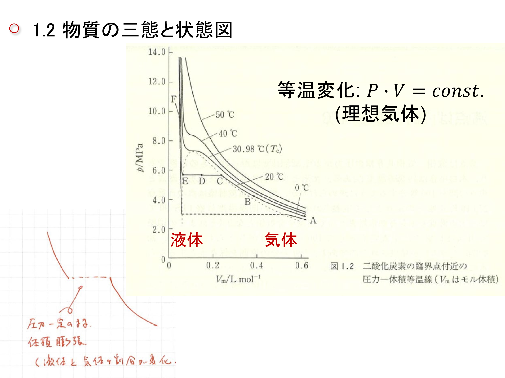
横軸\(V_{m}\)はモル体積\(\frac{V}{n}\)で、単位は\(\mathrm{L\,mol^{-1}}\)。縦軸は圧力。各曲線は温度一定の等温線である。理想気体なら、同じ物質量と温度について\(pV=\text{一定}\)なので、体積を増やすと圧力が滑らかに下がる。
図の20 ℃の線は、右の気体側から圧縮するとCで液化が始まり、C〜Eの水平区間では圧力をほぼ一定に保ったまま気体の割合が減る。Eより左ではほぼ液体となり、少し圧縮するだけでも圧力が大きく上がる。逆に左から膨張させれば、水平区間で液体の割合が減って気体が増える。水平線は「一つの気体相が理想気体則に反している」のではなく、二相の比率が変化している区間である。
臨界温度より高い40 ℃・50 ℃の曲線では、この共存の水平区間がなくなる。左下の手書き図も、圧力一定のまま体積が変わる点を強調している。文字起こしを整えると「温度を保ったまま膨張すると、圧力がほぼ一定の区間がある」という説明になる（原典：等温線の説明）。これは二相共存区間について読む。
1.3：相律と共存条件
この章の想定読了時間：約5〜6分
解説 8
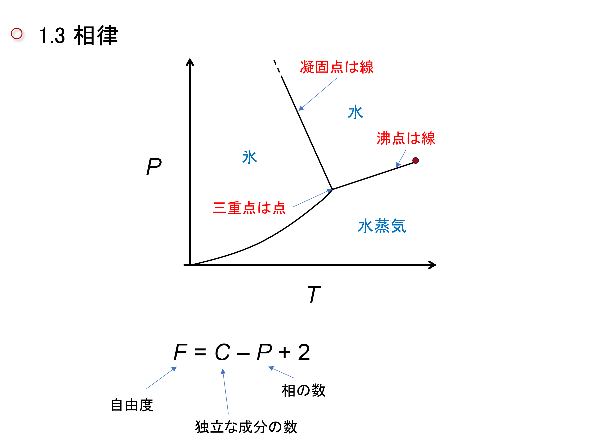
相律は、複数の相が平衡で共存するとき、温度・圧力・組成のうち独立に決められる条件がいくつ残るかを数える法則である。この数を自由度という。例えば純水の氷と液体の水を共存させたい場合、温度を決めれば共存できる圧力は決まり、両方を勝手には選べない。ここで数えるのは試料の量ではなく、温度・圧力・各相の組成のような強度変数である。強度変数は、同じ状態の試料を倍にしても値が倍にならない。
成分数 \(C\) は、系の組成を表すのに必要な、互いに独立な物質の数である。相や分子種の数をそのまま数えるものではない。例えば氷・液体の水・水蒸気は姿が違ってもすべて \(\mathrm{H_2O}\) なので、純水の成分数は \(C=1\)。反応を考えない水とエタノールの混合物なら、両者の割合を指定するため \(C=2\) となる。化学反応がある系では、物質の種類から独立な反応関係などを差し引いて数える。
相数 \(P\) は、系に同時に存在し、平衡で共存する相の数である。氷だけなら \(P=1\)、氷と液体の水なら \(P=2\)、氷・液体の水・水蒸気なら \(P=3\)。同じ液相の水を二つの容器に分けても、相数は増えない。成分数を \(C\)、相数を \(P\)、自由度を \(F\) と書くと、通常の相律は
である。末尾の \(2\) は、温度と圧力を独立に指定できることに対応する。相が一つ増えると、その相と既存の相の平衡条件が一つ増え、自由度は一つ減る。したがってこの式は、指定した相を平衡で共存させながら、条件をあといくつ独立に選べるかを教える。温度や圧力を外から固定して使う場合は、独立に固定した条件の数だけ自由度を減らす。ここでの \(F\) は p.1 の自由エネルギー \(F\) とは別物で、\(P\) も圧力ではなく相数である。 以下では混同を避け、自由度を \(f\)、相数を \(r\)、圧力を \(p\) と書く。
原典の水の図は定性的な模式図で、二相共存を線、三相共存を点として示す。氷と水の境界が負の傾きを持つことも読み取れる。文字起こしを整えると「水の相境界はCO₂のものと傾きが異なる」という指摘になる（原典：水の相図の説明）。その導出は後続内容なのでここでは図の特徴の確認にとどめる。
解説 9
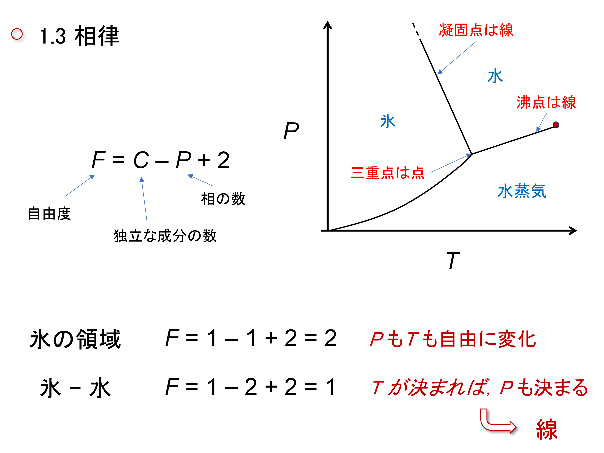
純水なので\(C=1\)。氷だけの領域では\(f=1-1+2=2\)となり、同じ相の領域内なら温度と圧力を独立に変えられる。氷と水が共存する線では\(f=1-2+2=1\)。例えば温度を決めると共存できる圧力も決まり、任意の圧力をさらに選ぶことはできない。
図中の三重点にも同じ計算を適用すると\(f=1-3+2=0\)で、三相共存の温度・圧力は固定される。ただし相の量や割合まで相律で決まるわけではない。問題では「成分数→相数→自由度→図の領域・線・点」の順に確認する。文字起こしを整えると「温度・圧力・体積を三つとも独立には選べない」という例になる（原典：自由度の説明）。体積は物質量や状態方程式とも関係するためである。
解説 10
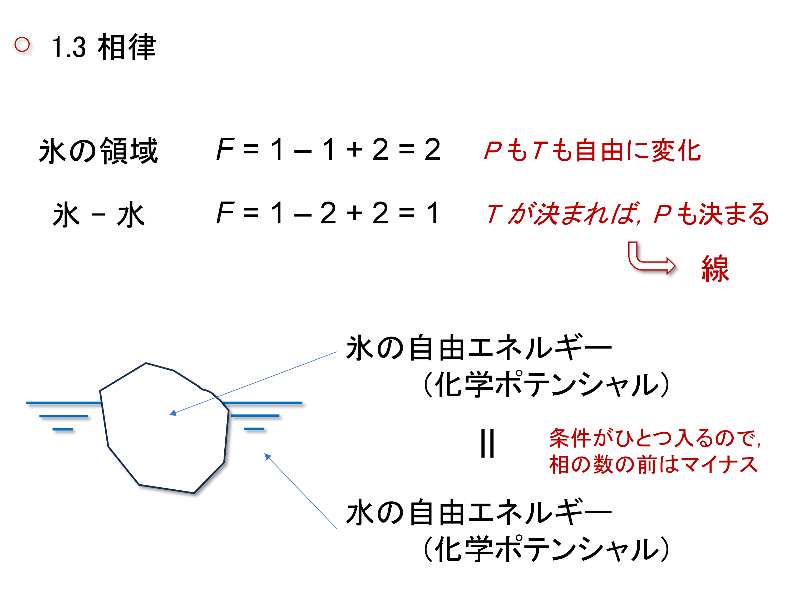
水の中の氷を描いた図では、氷と液体の水の間で水分子が移れる。移動によってどちらの相が増えるかを考えるため、まず化学ポテンシャル \(\mu\) を使う。これは温度 \(T\) と圧力 \(p\) を保ったまま、その相に物質を少し加えたとき、ギブズエネルギー \(G\) が物質量 \(n\) の増加に対してどれだけ変わるかを表す量である。純物質の一相なら
となり、「その相の水を1 mol増やすときの \(G\) の増え方」、すなわちモル当たりのギブズエネルギーと読める。純物質の一相では \(G\) は物質量に比例するので、増加率 \(\mu\) と \(G/n\) が一致する。氷と液体の水は同じ \(\mathrm{H_2O}\) でも分子の並び方が違うため、それぞれの \(\mu\) の値は一般に異なる。
なぜ \(\mu(T,p)\) と書くのか。純物質の各相では、物質量を何倍にしてもモル当たりの値は変わらず、相を指定すればその値は温度と圧力で決まるからである。温度や圧力を変えると、その相のモル当たりの \(G\) も変わる。したがって氷には \(\mu_{\text{氷}}(T,p)\)、液体の水には \(\mu_{\text{水}}(T,p)\) という別々の関数があり、同じ \(T,p\) を代入して比較する。混合物では組成にも依存するが、ここは純水なので組成変数は要らない。
氷から液体へ少量 \(\delta n>0\) の水が移ると、氷の \(G\) は約 \(\mu_{\text{氷}}\delta n\) 減り、液体の \(G\) は約 \(\mu_{\text{水}}\delta n\) 増える。温度・圧力を一定に保つと、全体の変化は
となる。例えば \(\mu_{\text{水}}<\mu_{\text{氷}}\) なら \(\delta G_{\text{全体}}<0\) なので、氷が融ける向きへ進む。逆なら液体が凍る向きへ進む。どちらへ少し移しても \(G\) が下がらず、二相が平衡で共存する条件は
である。この等式が \(T\) と \(p\) に一つの制約を課すため、氷だけの領域では二つ選べた条件が、氷と水の共存線上では一つしか選べない。原典の「氷の自由エネルギー＝水の自由エネルギー」は、化学ポテンシャルというモル当たりの値の比較として読む。氷と水の量が違えば、各相の \(G\) の総量まで等しい必要はない。文字起こしを整えると「相の自由エネルギーは、物質量をそろえて比べる」という説明になる（原典：相平衡の説明）。
2.1前半：熱の移動と第1法則
この章の想定読了時間：約4分
解説 11
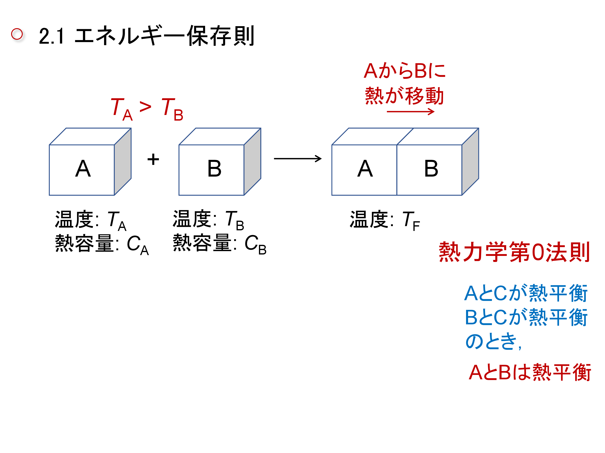
温度\(T_{\mathrm A}>T_{\mathrm B}\)のブロックAとBを接触させ、最終温度を\(T_{\mathrm F}\)とする。熱は温度差に伴って移動するエネルギーであり、熱平衡は接触させても正味の熱移動が起きない状態。\(C_{\mathrm A},C_{\mathrm B}\)はそれぞれの熱容量で、温度を1 K上げるのに必要な熱量を表す。外へ熱が逃げず、相変化や無視できない仕事がなければ、最終温度は二つの初期温度の間に来る。
第0法則は「AとCが熱平衡、BとCも熱平衡なら、AとBも熱平衡」という関係であり、共通の温度を定義できる根拠になる。補足として、高温側から低温側へ自発的に熱が流れる向きは第2法則に関わる内容で、第0法則だけから決まるわけではない。図の矢印と、第0法則の記述の役割を分けて読む。
熱容量をこの温度範囲で一定とみなすと、Aから出た熱の大きさは\(C_{\mathrm A}(T_{\mathrm A}-T_{\mathrm F})\)、Bが受け取った熱は\(q_{\mathrm B}=C_{\mathrm B}(T_{\mathrm F}-T_{\mathrm B})\)。どちらも正の大きさとして書かれている。\(q\)は熱量で、\(C\)を\(\mathrm{J\,K^{-1}}\)、温度差をKで入れれば熱量はJとなる。
計算では「出た量の大きさ」を使うか、「系へ入った向きを正」とするかを最初に決める。温度によって熱容量が大きく変わる場合は単純な積でなく\(q=\int C(T)\,\mathrm{d}T\)を使う。このページの式は一定熱容量の近似である。
解説 13
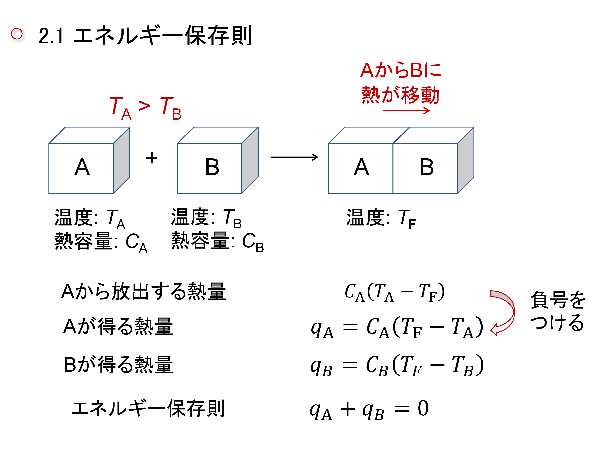
Aが受け取った熱は\(q_{\mathrm A}=C_{\mathrm A}(T_{\mathrm F}-T_{\mathrm A})<0\)。Aは熱を失うので負になる。一方、Bは\(q_{\mathrm B}>0\)。A+B全体が外部へ熱を逃がさず、仕事を無視できるなら
補足として整理すると、\(T_{\mathrm F}=\frac{C_{\mathrm A}T_{\mathrm A}+C_{\mathrm B}T_{\mathrm B}}{C_{\mathrm A}+C_{\mathrm B}}\)。最終温度は熱容量で重みをつけた平均であり、単純な平均になるのは\(C_{\mathrm A}=C_{\mathrm B}\)のときだけ。文字起こしでは熱の出入りの符号を言い直している。整えると「一方が失う熱と他方が受け取る熱を、同じ符号の約束で足してゼロとする」という内容になる（原典：熱収支の説明）。
ここまでの熱収支に「仕事も合わせる」という視点が加わる。仕事は、力による変位や電気的作用などを通じたエネルギー移動である。文字起こしを整えると「加熱で物体が膨張すると外へ仕事をするので、入った熱のすべてが内部エネルギーとして残るわけではない」という説明になる（原典：熱と仕事の説明）。
したがって\(q_{\mathrm A}+q_{\mathrm B}=0\)は特定の熱交換モデルの式。一般のエネルギー保存は、次の\(\Delta U=q+w\)で扱う。
この授業では、\(q\)は熱として系が受け取ったエネルギー、\(w\)は仕事として系が受け取ったエネルギー。例えば熱を100 J受け取り、外へ仕事を30 Jしたなら\(q=100\,\mathrm{J}\)、\(w=-30\,\mathrm{J}\)で、\(\Delta U=70\,\mathrm{J}\)。
文字起こしを整えると「外へした仕事を正に取る教科書もある」という説明になる（原典：仕事の符号の説明）。その場合の\(\Delta U=q-W\)とは記号の約束が違うだけなので、式だけを混ぜず「系が受け取る／外へする」を確認する。
解説 16
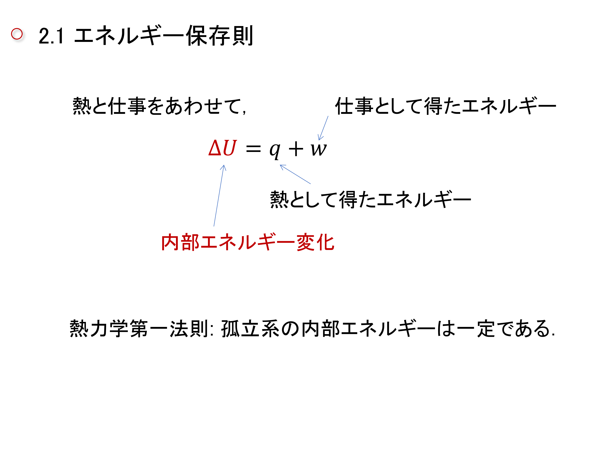
孤立系は外界と物質もエネルギーも交換しない系。熱も仕事も境界を通らないため\(q=w=0\)で、p.15より\(\Delta U=0\)となる。これがここで示された第1法則の表現である。
孤立したA+B全体でAからBへ熱が移っても、AとBそれぞれの内部エネルギーは変わり得る。「全体が一定」と「各部分が一定」を区別する。また、物質が出入りしない閉じた容器でも、加熱できるなら孤立系ではない。
2.1後半：膨張仕事・熱容量・エンタルピー
この章の想定読了時間：約5〜6分
解説 17
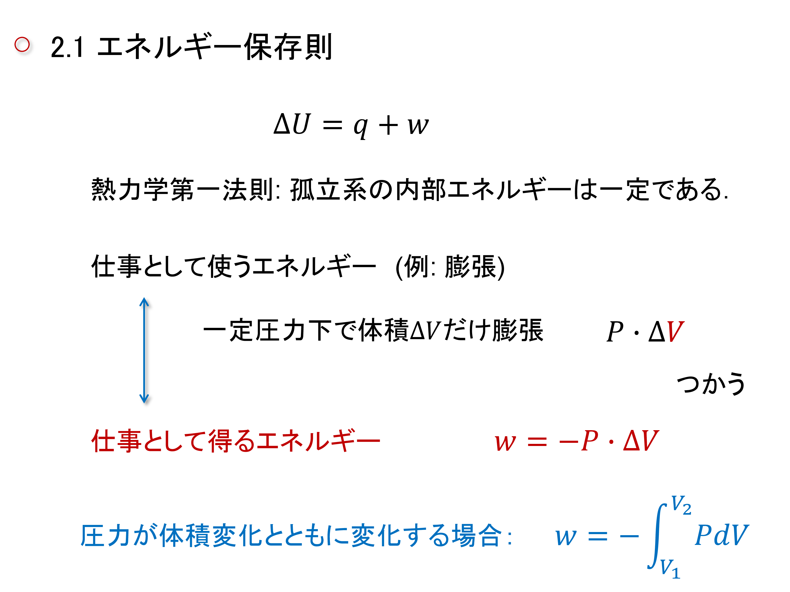
\(\Delta V=V_{2}-V_{1}\)とすると、外圧一定の膨張仕事は\(w=-p_{\mathrm{ext}}\Delta V\)。\(p_{\mathrm{ext}}\)は系が押し返す外界の圧力である。膨張では\(\Delta V>0\)なので\(w<0\)、圧縮では逆に\(w>0\)。圧力の単位Paと体積の単位\(\mathrm{m^3}\)を掛けるとJになる。
外圧が変わる場合は
PDFでは圧力を\(P\)とだけ書くが、補足として一般には外圧を積分する。系の圧力をそのまま代入できるのは、機械的平衡を保つ可逆な極限などで両者を対応させられる場合。この条件が次の導出で必要になる。
解説 18
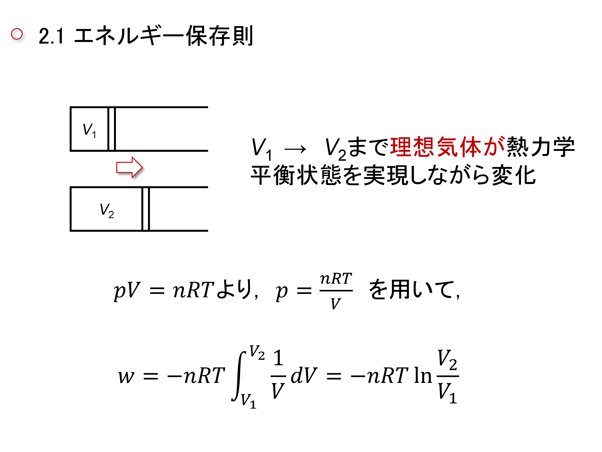
ピストン図では、体積\(V_{1}\)から\(V_{2}\)へ膨張する。理想気体の状態方程式\(p=\frac{nRT}{V}\)を仕事の積分に代入する。物質量一定、温度一定、機械的平衡を保つ可逆な極限を仮定すれば
\(\ln\)は自然対数。温度一定だから\(nRT\)を積分の外へ出せる。対数の中は体積同士の比で無次元でなければならない。\(V_{2}>V_{1}\)なら対数が正で\(w<0\)、圧縮では逆、という符号の確認ができる。
PDF本文には「平衡状態を実現しながら」とあるが、等温条件は明記されていない。文字起こしを整えると「温度が変わらない条件なら温度を積分の外に出せる。断熱では温度が変わり得る」という説明になる（原典：等温膨張の説明）。これを補足の根拠とした。断熱は熱が出入りしない\(q=0\)という条件で、温度一定という意味ではない。さらに外圧ゼロでの自由膨張は\(w=0\)であり、この対数式を当てはめない。
解説 19
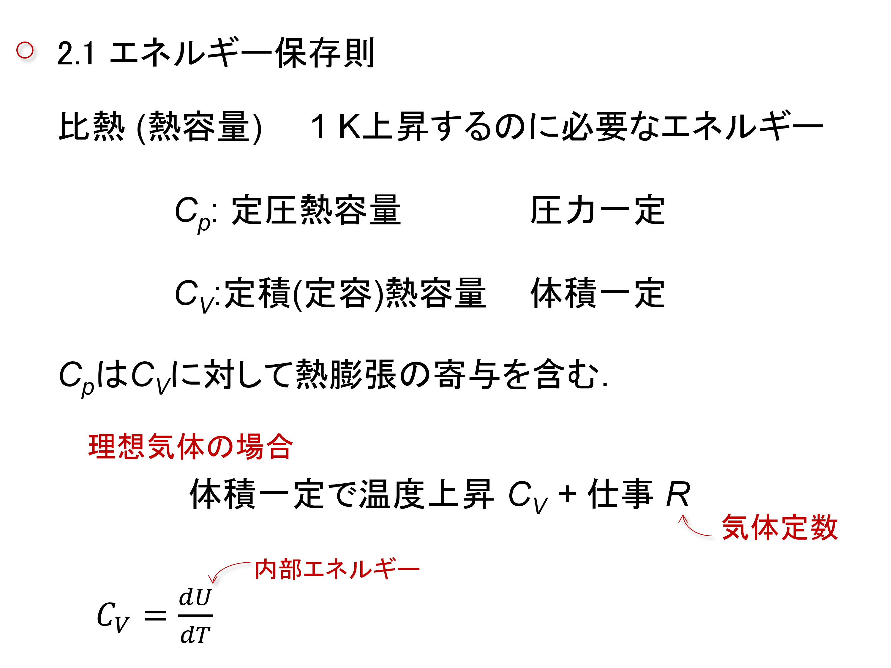
定容熱容量\(C_{V}\)は体積一定、定圧熱容量\(C_{p}\)は圧力一定での熱容量。物質量一定で膨張仕事だけを考えるなら、定容では\(w=0\)なので\(q_{V}=\Delta U\)。したがって
偏微分\(\partial\)は他の指定変数を固定して変化率を見る記号で、下付きの\(V,n\)が固定条件を表す。PDFの\(\frac{\mathrm{d}U}{\mathrm{d}T}\)にはこの条件を補って読む。定圧では加熱に伴う膨張で外へ仕事をするため、理想気体では同じ温度上昇により多くの熱が必要になる。
原典の「仕事\(R\)」は、理想気体1 molの温度を1 K上げるときの膨張仕事の大きさに対応する熱容量の寄与である。任意の試料で仕事そのものが常に\(R\)になるわけではない。
エンタルピーの定義は\(H=U+pV\)。物質量一定、圧力一定、外圧と系の圧力が対応し、仕事が膨張仕事だけなら、第1法則より\(\Delta U=q_{p}-p\Delta V\)。一方、\(\Delta H=\Delta U+p\Delta V\)なので\(q_{p}=\Delta H\)となる。よって
原典の「内部エネルギーに熱膨張を加えたもの」は定圧での使い方を表す案内であり、一般の定義は\(U+pV\)。圧力が変わるなら\(H\)の変化には\(p\)の変化の寄与もある。
理想気体では\(H=U+nRT\)で、\(U\)は温度だけの関数になるため、試料全体の熱容量は\(C_{p}-C_{V}=nR\)。モル熱容量\(C_{p,m}=\frac{C_p}{n}\)、\(C_{V,m}=\frac{C_V}{n}\)に直すと
PDFの\(C_{p}=C_{V}+R\)は明示された「モル当たり」の式として読む。文字起こしを整えると「熱容量の表記では、モル当たりという前提が省略されることがあるので注意する」という説明になる（原典：熱容量の説明）。実在気体一般へこの差をそのまま適用しない。
解説 21
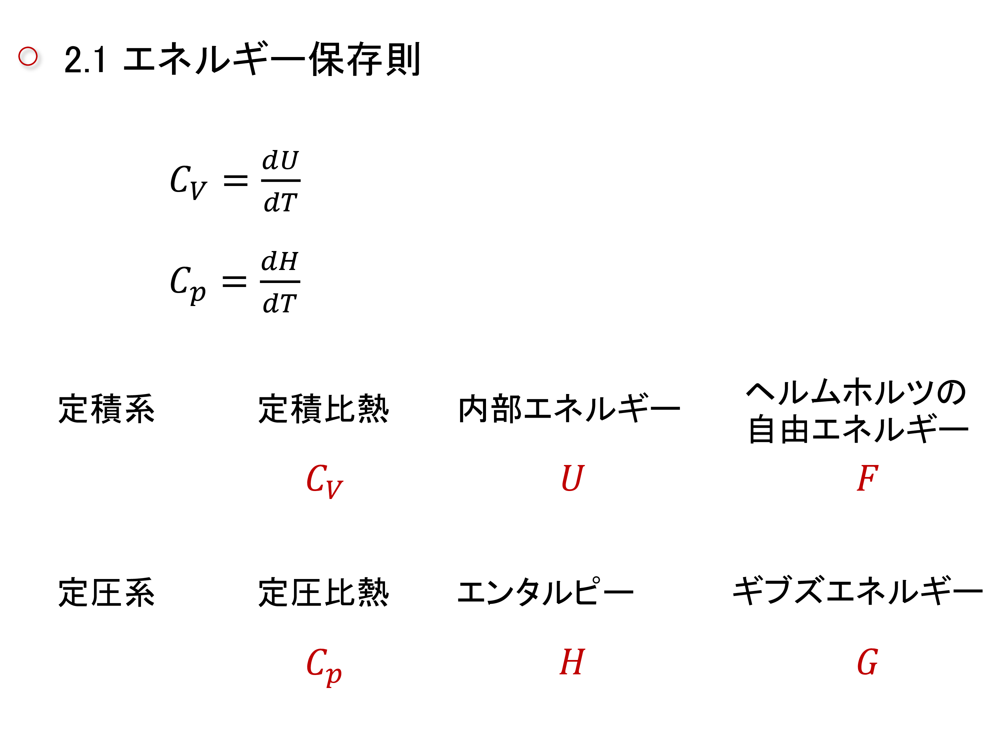
| 固定条件 | 熱容量 | 膨張仕事のみの場合の熱 | 自発変化の判定に使う量 |
|---|---|---|---|
| 体積一定 | \(C_{V}\) | \(q_{V}=\Delta U\) | 温度も一定なら\(F=U-TS\) |
| 圧力一定 | \(C_{p}\) | \(q_{p}=\Delta H\) | 温度も一定なら\(G=H-TS\) |
表の最右列にはp.1の物質の出入り・仕事に関する条件も適用する。「一定体積」だけでは\(F\)減少を、「一定圧力」だけでは\(G\)減少を判断できない。問題を読み始めるとき、どの条件が固定され、熱を内部エネルギーとエンタルピーのどちらへ対応させられるかを確認する。
解説 22
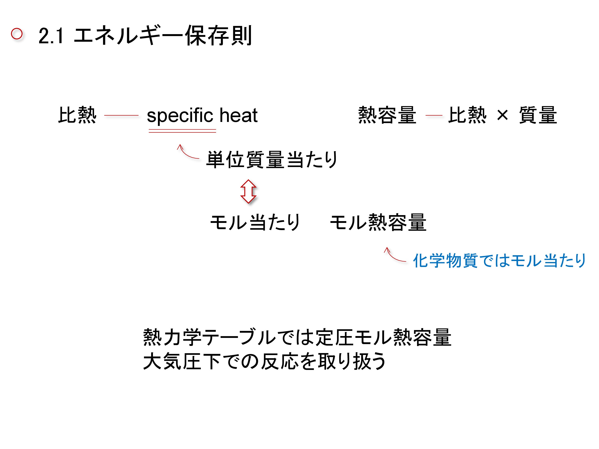
| 量 | 記号（補足） | 単位 | 試料全体との関係 |
|---|---|---|---|
| 熱容量 | \(C\) | \(\mathrm{J\,K^{-1}}\) | 試料全体 |
| 比熱：単位質量当たりの熱容量 | \(c\) | \(\mathrm{J\,kg^{-1}\,K^{-1}}\) | \(C=mc\) |
| モル熱容量 | \(C_{m}\) | \(\mathrm{J\,mol^{-1}\,K^{-1}}\) | \(C=nC_{m}\) |
\(m\)は質量。熱容量一定の範囲なら、対応する条件で\(q=C\Delta T=mc\Delta T=nC_{m}\Delta T\)。質量をgで使う表では比熱の単位も\(\mathrm{J\,g^{-1}\,K^{-1}}\)へそろえる。温度差はKと℃で数値が同じだが、状態方程式や自由エネルギーの\(T\)には絶対温度を使う。
PDFでは化学物質の表は定圧モル熱容量をよく用いると説明し、文字起こしを整えると「大気圧下で行う実験と、体積一定のボンブを使う実験とでは、一定にする条件が異なる」という説明になる（原典：熱容量の説明）。表を見るときは\(p\)か\(V\)か、モル当たりか試料全体かを単位と一緒に確認する。文字起こしの終盤を整えると「今回はエネルギー保存まで扱い、次回は2章の残りへ進む」という案内になる（原典：授業末尾）。